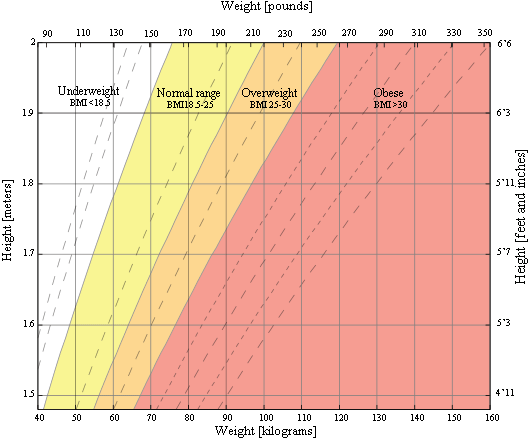

BMI is a measurement of a person's leanness or corpulence based on their height and weight, and is intended to quantify tissue mass. It is widely used as a general indicator of whether a person has a healthy body weight for their height. Specifically, the value obtained from the calculation of BMI is used to categorize whether a person is underweight, normal weight, overweight, or obese depending on what range the value falls between. These ranges of BMI vary based on factors such as region and age, and are sometimes further divided into subcategories such as severely underweight or very severely obese. Being overweight or underweight can have significant health effects, so while BMI is an imperfect measure of healthy body weight, it is a useful indicator of whether any additional testing or action is required. Refer to the table below to see the different categories based on BMI that are used by the calculator.
Check your fitness in hear
Enter your Weight (kg) :
Enter your Height (m) :
The Body Mass Index (BMI) Calculator can be used to calculate BMI value and corresponding weight status while taking age into consideration. Use the "Metric Units" tab for the International System of Units or the "Other Units" tab to convert units into either US or metric units. Note that the calculator also computes the Ponderal Index in addition to BMI, both of which are discussed below in detail.
This is a graph of BMI categories based on the World Health Organization data. The dashed lines represent subdivisions within a major categorization.

Being overweight increases the risk of a number of serious diseases and health conditions. Below is a list of said risks, according to the Centers for Disease Control and Prevention (CDC):
As can be seen from the list above, there are numerous negative, in some cases fatal, outcomes that may result from being overweight. Generally, a person should try to maintain a BMI below 25 kg/m2, but ideally should consult their doctor to determine whether or not they need to make any changes to their lifestyle in order to be healthier.
Being underweight has its own associated risks, listed below:
In some cases, being underweight can be a sign of some underlying condition or disease such as anorexia nervosa, which has its own risks. Consult your doctor if you think you or someone you know is underweight, particularly if the reason for being underweight does not seem obvious.